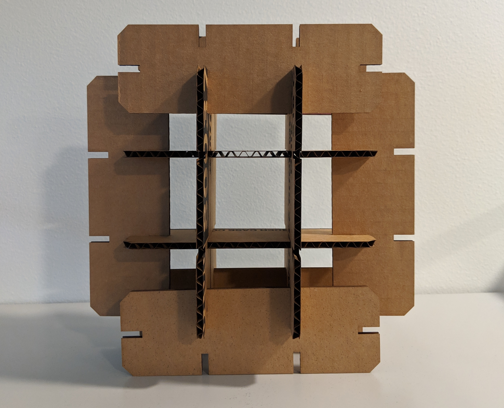
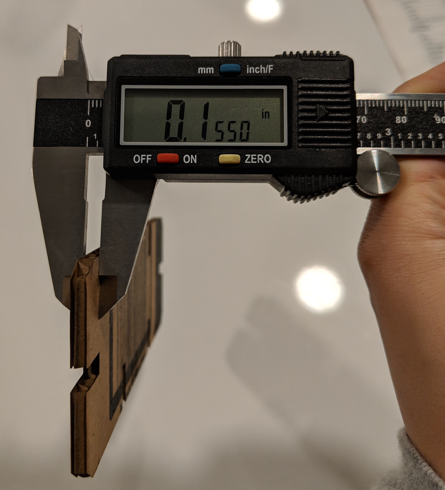
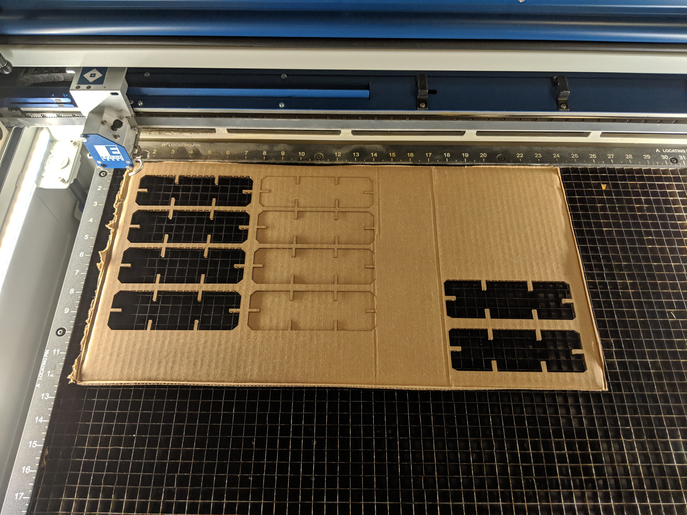
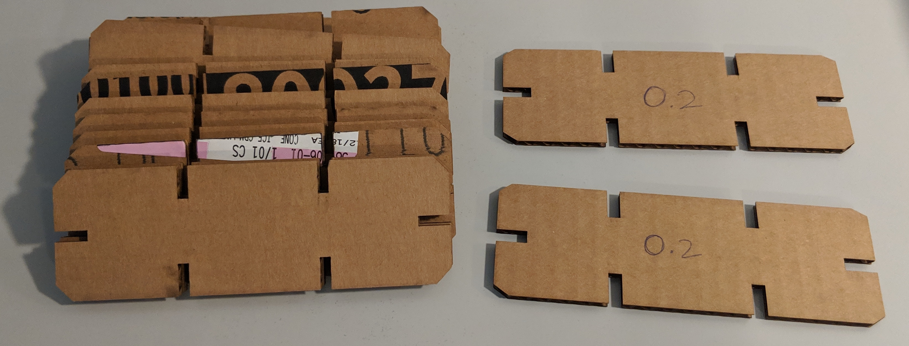
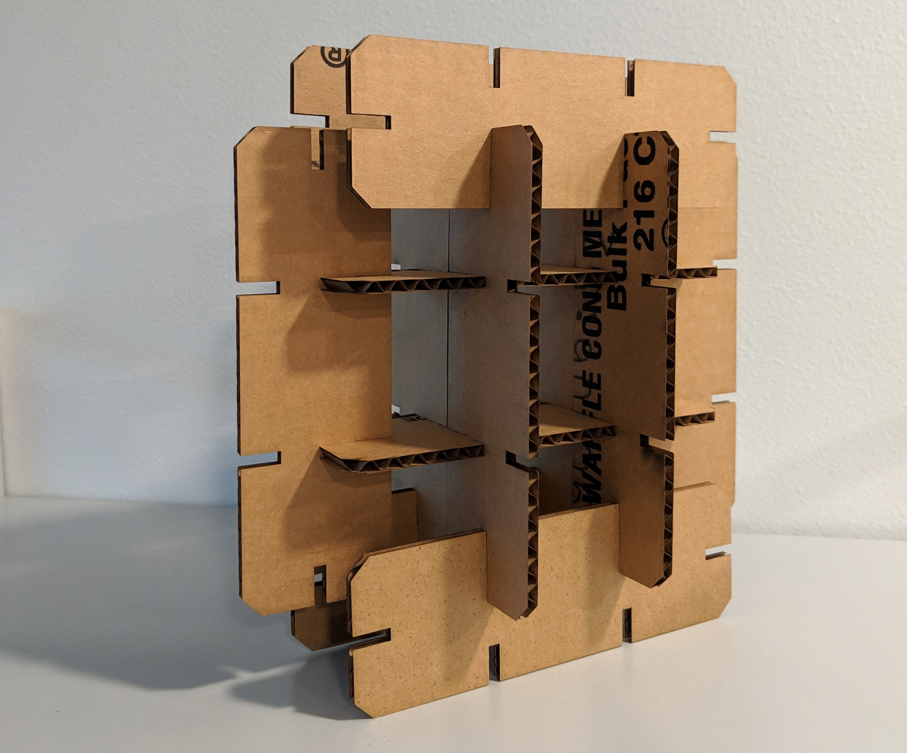

This assignment was completed in the MILL on 04/11/2019.

I first started by measuring out the sheet of cardboard with my calipers, which read 0.155 inches.

I borrowed a laptop from the MILL to use Adobe Illustrator to draw a shape that I could lasercut. I did not know how to use Illustrator, so I asked D'Marcus to help me. I drew a 6" by 2" rectangle, with 6 0.2" wide slots. For some reason, I thought the slots had to be slightly larger than the cardboard. I also chamfered the corners of the rectangle. I copied the rectangle twice.
I returned during Josh's office hours at 5:00 on 04/11/2019 to print. Josh helped me set up the cardboard in the lasercutter and then I ran it. However, with 0.2" wide slots, the cardboard did not fit together. The two pieces would fall apart loosely. So I decided to redraw the rectangle with 0.15" slots, which fit a lot better. I print these out four at at a time. Image from unloading the Lasercutter below.

I printed 8 pieces on the first sheet of cardboard, and 4 more pieces on cardboard from the same cardboard box. The 12 final pieces are on the left below. On the right are the 2 cardboard pieces with slots that were too wide, so the pieces did not stay together.

I then took the pieces home to assemble them! Assembly below, but I had to disassemble it to take it back to class.

Peer teachers: D'Marcus Butler, Joshua V